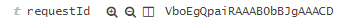

- ELK
- Technical presentation
Imagine a request that generate this log in front service
127.0.0.1 - - [02/Jul/2015:00:13:48 +0200] "VboEgQpaiRAAAB0bBJgAAACD" "GET /sthing/ HTTP/1.0" 200 3175 17173 "-" "-"
Middle service get this request and produce this log
127.0.0.1 - - [02/Jul/2015:00:13:48 +0200] "VboEgQpaiRAAAB0bBJgAAACD" "GET /sthing/ HTTP/1.1" 200 35
Application logger will also produce these logs
2015-07-02 00:13:48,804 - [VboEgQpaiRAAAB0bBJgAAACD] - [INFO] [Class.java:55] - Content
2015-07-02 00:13:48,885 - [VboEgQpaiRAAAB0bBJgAAACD] - [INFO] [Class.java:55] - Content
filter {
if [program] == "front-access" {
mutate {
add_tag=> ["front","access"]
}
}
if [program] == "middle-access" {
mutate {
add_tag=> ["middle","access"]
}
}
if [program] == "middle-applicative" {
mutate {
add_tag=> ["middle","applicative"]
}
}
}
filter{
if "access" in [tags]{
grok {
match => { "message" => ["%{IPORHOST:clientip} %{USER:ident} %{USER:auth} \[%{HTTPDATE:timestamp}\] \"%{DATA:requestId}\" \"(?:%{WORD:verb} %{NOTSPACE:request}(?: HTTP/%{NUMBER:httpversion})?|%{DATA:rawrequest})\" %{NUMBER:response} (?:%{NUMBER:bytes}|-) %{NUMBER:responseTime:float} %{QS:referrer} %{QS:agent}","%{IPORHOST:clientip} %{USER:ident} %{USER:auth} \[%{HTTPDATE:timestamp}\] \"%{DATA:requestId}\" \"(?:%{WORD:verb} %{NOTSPACE:request}(?: HTTP/%{NUMBER:httpversion})?|%{DATA:rawrequest})\" %{NUMBER:response} (?:%{NUMBER:bytes}|-)"]}
}
date {
locale => "en"
match => ["timestamp", "dd/MMM/yyyy:HH:mm:ss Z"]
target => "@timestamp"
timezone => "Europe/Paris"
}
mutate{
remove_field => ["timestamp"]
}
}
}
filter{
if "applicative" in [tags]{
grok {
match => { "message" =>"%{TIMESTAMP_ISO8601:timestampiso} - \[%{DATA:requestId}\] - \[%{LOGLEVEL:loglevel}\] \[%{WORD:class}.%{WORD}:%{NUMBER:line:float}\] - (?m)%{GREEDYDATA:content}"}
}
date {
match => ["timestampiso", "yyyy-MM-dd HH:mm:ss,SSS"]
target => "@timestamp"
timezone => "Europe/Paris"
}
mutate {
remove_field => ["timestampiso"]
}
}
}
output {
elasticsearch { host => "elasticsearch" }
stdout { codec => rubydebug }
}
- Search all the logs with this id...

- ...And you'll see all the logs corresponding to a request.
Queries
- to be or not to be: equivalent to to OR be OR or OR not OR to OR be
- Query entire phrase: "to be or not to be"
- Search in particular fields: tags:(access AND middle)
- Search for numeric range: line_id:[30000 TO 80000]